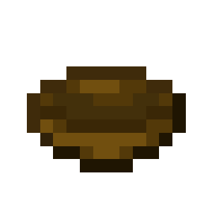
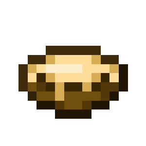

About
Green onions are a food item that can be eaten as is or used in crafting recipes.
Config
Set the Enable Green Onions option to Yes (or true) to use them, or No (or false) to hide them. All green onion blocks, items, and seeds use this option. Yes (or true) is the default setting.
Obtaining
Green onions can be obtained from harvesting green onion crops. These can be planted from green onion seeds.
Crafting Recipe



Note: If green onions are disabled, the crafting recipe excludes them.
Green Onion
| Renewable | Yes (Green Onion Crops) |
| Stackable | Yes (64) |
| Hunger | 1 (half a drumstick) |
| Saturation | 0.6 |
| Always consumable | No |